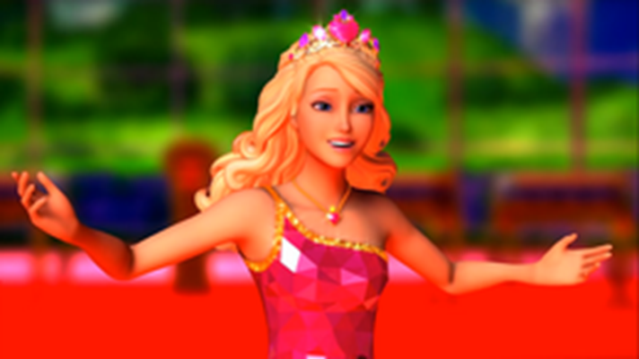
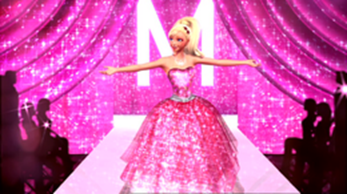

Ritornando alle origini...
Il natale perfetto
Trama
In occasione delle vacanze natalizie, Barbie e le sorelle Skipper, Stacie e Chelsea vogliono raggiungere la zia Millie a New York, tuttavia l'aereo in cui viaggiano è costretto a effettuare un atterraggio di emergenza a Rochester a causa di una tempesta di neve all'aeroporto di New York. Barbie noleggia una macchina per andare a Minneapolis per cercare un volo più veloce, tuttavia lungo la strada innevata si perdono. Successivamente scorgono il Tannenbaum Inn, gestito da Christie Clauson e dalla famiglia degli Elif, dove poter alloggiare una notte: l'interno è addobbato a festa, con uomini impegnati a impacchettare regali e a sistemare decorazioni. Skipper tenta di prenotare un volo per New York, ma a causa della neve e di successive perturbazioni, le sorelle non potranno partire. Iniziano a uscire e camminare sulla neve fresca, esplorando il territorio dove sorge anche un fienile con un sacco di regali; lungo la strada è situato anche un distributore di benzina con un garage dove c'è una band che suona, ma che non ha a disposizione un cantante. Rassegnate all'idea di non poter più raggiungere la loro zia, le sorelle propongono un concerto al Tannenbaum con la canzone che Skipper avrebbe dovuto portare a un gruppo a New York. Skipper, avvalendosi della band conosciuta nel garage, vuole però organizzare il tutto in piena autonomia, mentre Stacie e Chelsea vorrebbero prepararsi per un numero con i cani, ma le due litigano e Chelsea, sgridata anche da Skipper, si allontana, mentre i cani, alla vista di uno scoiattolo, lo rincorrono distruggendo tutto il palco e le decorazioni. Rendendosi conto della scomparsa di Chelsea, tutti si mettono alla ricerca, finché Barbie non la ritrova nel fienile. Nella zona centrale scoprono poi che i regali sono spariti e al loro posto trovano tutto predisposto per lo spettacolo: palco, luci, sedie e decorazioni. All'arrivo del pubblico, Stacie e Chelsea si esibiscono con i cani, successivamente Skipper canta il suo brano con la band e in quell'istante arriva anche zia Millie. All'esterno poi viene allestito un albero di Natale intorno al quale tutti cantano sulle note di Deck the Halls.
L'accademia per principesse
Trama
Blair Willows è la giovane cameriera di un bar nel regno di Gardenia. Un giorno, scopre che sua sorella minore Emily l'ha iscritta a una lotteria la cui vincitrice frequenterà un'accademia per principesse grazie a una borsa di studio per diventare lady reale (ossia una dama di compagnia). La pretendente al trono Delancy Devin sorteggia la vincitrice, che risulta essere proprio Blair. La ragazza viene quindi condotta dalla guardia Brock all'accademia, dove viene riconosciuta da un golden retriever di nome Prince. Qui incontra Alexandra Privet, la severa ma gentile direttrice, che mostra a Blair parte della scuola e che le affida la fatina Grace (ogni studentessa ha una fatina, come assistente personale) per condurla nella sua stanza; qui incontra le sue nuove compagne: Hadley, molto sportiva, e Isla, appassionata di musica. Poco dopo le ragazze vengono radunate nel giardino per assistere al discorso di apertura dell'anno scolastico da parte di Dama Devin, l'insegnante della scuola (in passato anche lei aspirante lady reale, ma non venne scelta né dalla regina Isabella né dalle altre principesse); nei giorni seguenti la donna si comporta molto scortesemente con Blair, e anche sua figlia Delancy non sembra averla in simpatia. Le uniche amiche che ha sono le sue compagne di stanza. L'anno passa e la signorina Privet aiuta Blair a migliorare, a concentrarsi e ad avere fiducia in sé stessa. A non molta distanza dall'incoronazione che avrà luogo il 10 giugno, si tiene la lezione di buone maniere a tavola; le allieve hanno a disposizione parte del tempo per visitare il castello. Nella galleria di corte, Hadley e Isla osservano i ritratti di famiglia (che includono Prince da cucciolo) e notano una certa somiglianza tra Blair e la giovane regina Isabella; lei e il marito morirono in un incidente stradale con la figlia, la principessa Sofia. Iniziano ad avere dei sospetti che diventano certezza quando Blair rivela alle amiche di essere stata adottata, quando aveva solo un anno, il 26 aprile di diciassette anni prima, data dell'incidente; Delancy ascolta di nascosto la loro conversazione e ne rimane turbata. A pranzo, nel tentativo di sabotare ulteriormente Blair, Dame Devin annuncia un progetto che prevede la demolizione dei quartieri più poveri (compreso quello in cui vive la famiglia di Blair) per sostituirli con dei parchi, lasciandola nel totale sconforto. Per dimostrare le loro convinzioni, le amiche decidono di recuperare la corona magica di Gardenia (che si dice brilli quando viene indossata dall'erede legittimo), custodita nel caveau del palazzo, quella notte stessa. Dama Devin inizia a sospettare, e tenta di tutto per tenere le ragazze occupate per tutta la notte: le incastra incolpandole perfino di averle rubato alcuni gioielli. Le alunne resteranno in reclusione fino a quando Delancy, pentita del suo comportamento e avendo capito che Blair è in realtà sua cugina Sofia, fa fuggire le ragazze e le aiuta nel recupero della corona; una volta arrivate, però, Dama Devin le scopre e le rinchiude nel caveau. Tuttavia, grazie all'ingegno musicale di Isla, Blair e le altre riescono ad uscire, tentando di raggiungere in tempo la sala della cerimonia. Delancy sta per essere incoronata principessa e tenta di prendere tempo, fiduciosa nelle amiche; quando la corona si sta per posare su di lei, sopraggiungono Blair, Isla e Hadley rivelando che Blair è la principessa Sofia, sopravvissuta all'incidente: infatti la ragazza, dopo che Delancy le pone la corona sulla testa, si trasforma magicamente. Dama Devin, rimproverando rabbiosamente la figlia, rivela involontariamente di essere stata lei a eliminare la cognata per farla divenire principessa, finendo quindi immediatamente arrestata. Blair sceglie poi come sua lady reale proprio Delancy, e in seguito si ricongiunge alla sorella e alla madre adottive, le quali rimangono a vivere nel castello.
La magia della moda
Trama
Barbie si trova sul set del suo ultimo film, ispirato alla fiaba La principessa sul pisello, ma avendo espresso un'opinione personale su una scena viene licenziata dal regista: la notizia rimbalza su tutti i siti di gossip e Barbie viene anche lasciata da Ken, in seguito a una sua telefonata Ma Grace e Teresa scoprono che Ken è all'oscuro di tutto, essendo rimasto vittima di un brutto scherzo di Raquelle, che si è spacciata per lui al telefono con Barbie. Barbie decide di andare a Parigi, dove vive sua zia Millicent, titolare di una casa di moda, che rischia di chiudere. Dopo aver incontrato le Flairies, decide di organizzare una sfilata da sogno, aiutata anche da Alice (Marie Alecia), una stilista molto timida. Barbie, Alice e Millicent iniziano così a creare una collezione di vestiti per ragazze e per animali, tutti successivamente migliorati dalla magia delle Flairies. Ken raggiunge Barbie a Parigi e i due fanno pace dopo aver scoperto il piano di Raquelle.
La principessa e le popstar
Trama
Il regno di Meribella celebra il suo 500º anniversario e la principessa Tori è impegnata, insieme alle sorelle Meredith e Trevi, nei preparativi e a ricevere ospiti importanti. Messa sotto pressione dalla zia Amelia, Tori deve anche preparare un discorso da pronunciare il giorno dei festeggiamenti ufficiali. Keira è una nota popstar e cantautrice, di cui Tori è fan, in tour in tutto il mondo: si trova a Meribella per il concerto dell'anniversario e una sera viene invitata a palazzo dove conosce la principessa e instaura subito un'amicizia. Tori la porta in giro per il palazzo e Keira vorrebbe sapere come ci si sente ad essere una principessa: notando una certa somiglianza tra di loro, le due ragazze provano a scambiarsi gli abiti grazie ai loro oggetti magici (Tori con la sua spazzola e Keira con un microfono). Così si accorgono di essere identiche l'un l'altra e proseguono il giro del palazzo, dove Tori le mostra un giardino segreto dove è custodita una pianta di gardenia, protetta da alcune fate, con dei diamanti usati per pagare alcune spese; inoltre la vegetazione di Meribella dipende dalla pianta di gardenia. Due piccoli diamanti cadono e le fate le incollano sui ciondoli di Tora e Keira per simboleggiare la loro amicizia. Crider, il manager di Keira, una star fallita, spia le ragazze e quindi vede nella pianta una fonte di ricchezza utile per ritornare alla fama. Tori sta per restituire il suo aspetto a Keira, ma lei vorrebbe rimanere con i costumi della principessa per un altro giorno, così Tori le insegna il comportamento da principessa e Keira quello da popstar; l'una riceve le lusinghe del principe Liam, mentre l'altra è impegnata in prove generali e autografi. Ma Keira viene chiusa nella stanza di Tori dalla zia Amelia poiché la vera principessa non aveva completato il discorso e così non potrà raggiungere il concerto che avrebbe tenuto quella sera. Crider e Ruper (suo collaboratore), mentre Tori si trova sul palco, fanno irruzione al palazzo e si appropriano della gardenia, nonostante la resistenza delle fate, e ciò porta alla moria della vegetazione di tutto il regno. Quando finalmente le ragazze riescono nuovamente ad incontrarsi, cercano di fermare Crider con i loro oggetti magici, ma lui fa cadere la gardenia in un dirupo, disintegrandola. Per salvare Meribella, Tori e Keira piantano un'altra gardenia utilizzando i pezzi di diamante attaccati ai loro ciondoli, per poi raggiungere il palco e cantare insieme.
La principessa e la povera
Trama
In un regno arroccato sul cocuzzolo di una montagna nascono nello stesso istante due bambine identiche: la bionda principessa Annalisa e la castana popolana Erika. Passano diciotto anni: Annalisa è una principessa costretta a rispettare i suoi doveri, mentre Erika vive come sarta presso l'emporio di Madame Carp per saldare i debiti dei suoi defunti genitori. Il regno di Annalisa è in bancarotta poiché tutto l'oro delle miniere del regno è stato rubato dal consigliere reale Preminger, che mira al trono. La regina vedova, nel tentativo di evitare sorti nefaste al suo popolo, combina il matrimonio tra il re Dominik e sua figlia Annalisa. Quest'ultima viene dunque scortata in città da Julian, il precettore del quale è innamorata, per rendersi conto della situazione della sua gente in modo che accetti di sposarsi con un completo sconosciuto. Qui Annalisa incontra Erika, entrambe sorprese dalla loro somiglianza: le due stringono subito una profonda amicizia. Qualche giorno dopo, la principessa viene fatta prigioniera dagli scagnozzi di Preminger, Nick e Nack, il quale crede che, sposandola, diventerebbe il nuovo re. Sospettando che il consigliere sia il responsabile della sparizione di Annalisa, Julian si rivolge a Erika chiedendole di assumere l'identità della principessa in attesa di trovarla; la ragazza, inizialmente scettica, accetta. Erika fa il suo ingresso a palazzo e si innamora del re Dominik, il quale a sua volta se ne era già invaghito dopo avere scoperto che non è Annalisa; l'unico ad essere sospettoso della sua identità è Preminger. La principessa, che nel frattempo è riuscita a fuggire, si ritrova a lavorare da Madame Carp. La mascherata di Erika nelle sembianze di Annalisa è destinata a durare poco: infatti Preminger rintraccia la principessa e la rinchiude nella miniera reale, poi si reca a palazzo e, con una finta storia, riesce a far richiudere Erika nei sotterranei, dal quale comunque riesce ad evadere. Dopo la fuga dalla prigione, la ragazza viene portata fuori con una scusa da re Dominik, travestitosi da guardia. Anche Annalisa e Julian riescono a fuggire dalla miniera e a fermare il matrimonio combinato tra la regina e Preminger. La principessa confessa alla madre di volere sposare l'uomo di cui è sempre stata innamorata e le dice che il regno può tornare a prosperare grazie alle ametiste trovate in miniera, mentre Erika parte per un viaggio, tornando dopo diversi mesi. Alcuni giorni dopo si celebrano i matrimoni delle due con i loro innamorati, e insieme partono per un lungo viaggio di nozze.
Nel mondo dei videogame
Trama
Quando per magia Barbie entra a far parte del suo videogioco preferito, incontra Cutie, l'amica a forma di nuvoletta, e Bella, la principessa pattinatrice. Le tre scoprono presto che un emoji dispettoso sta cercando di assumere il controllo del gioco. Mentre passano da un livello all'altro, Barbie deve contare sulle sue capacità di gioco e di ragionamento per salvare la squadra e vincere.
Barbie e le 12 principesse
Trama
Il vedovo re Randolph è padre di dodici principesse; poiché il comportamento delle sue figlie è considerato inadatto per il loro rango, decide di affidare la loro educazione a sua cugina, la duchessa Rowena. Quest'ultima si mostra da subito molto severa con le giovani, cambiando infatti radicalmente molte loro abitudini di vita: le fa vestire di grigio e proibisce tutte quelle attività nelle quali primeggiavano in talento (come la lettura, l'equitazione, il canto e soprattutto la danza). Il giorno del compleanno delle tre sorelle più piccole accade che Rowena, assieme al suo scagnozzo Desmond, sorprende le principesse a danzare e cantare; nonostante le ragazze le rispondano che per loro queste attività sono oramai una tradizione di famiglia, apprese direttamente da loro madre, una sdegnata Rowena s'impegna a rendere la vita delle principessine ancora più tremenda: vieta loro di ballare e di festeggiare. Quella stessa sera le tre sorelline ricevono in regalo un libro che narra la fiaba preferita della loro defunta madre: una principessa, attraverso una porta magica, giunge in un luogo incantato dove è presente un padiglione dorato in cui ella può danzare liberamente per ore ed ore, e decide di recarsi lì ogni sera; tuttavia, giunta la terza notte, scopre che il padiglione magico è destinato a scomparire, ma fortunatamente riesce a portare via un po' della magia di quel luogo con sé. Dopo aver finito di leggere la storia, Lacey (la sorellina più piccola) fa accidentalmente cadere il suo libro e le ragazze capiscono che le pietre disegnate sul pavimento della loro camera corrispondono a quelle disegnate sulla copertina di ciascuno dei loro libri. Allora Genevieve, la settima sorella, danza su ogni pietra, come dice la favola, facendo apparire una scala magica. Le principesse raggiungono un padiglione simile a quello della fiaba e ballano insieme per tutta la notte. Inoltre Lacey, una volta arrivata nel padiglione, si ferisce e scopre che l'acqua di quel luogo guarisce le ferite. Nel frattempo, Rowena scopre che le scarpette da ballo delle principesse, comprate da pochissimi giorni, sono molto consumate. Quando chiede alle sorelle dove siano andate, esse rispondono onestamente ma la donna le ritiene bugiarde e finisce per trattarle come domestiche, mentre avvelena lentamente il cugino con l'obiettivo di sostituirsi a lui. Genevieve chiede a Derek, il ciabattino di corte, di indagare sul signor Fabian, un uomo al quale la duchessa ha venduto qualcosa. Le sorelle tornano nel regno incantato ancora una volta, e Rowena le accusa di essere la causa della malattia del re; loro, allora, prendono la decisione di ritirarsi in quel mondo finché il padre non si sarà ristabilito. Derek incontra Fabian e scopre che Rowena gli aveva venduto il calice della regina Isabella; tornato al castello per avvertire Genevieve, scopre che le principesse sono sparite. Derek scopre il meccanismo per raggiungere il padiglione dorato ma viene spiato da Brutus, lo scimmiotto di Rowena; quest'ultima, introdottasi nel regno, raccoglie dei fiori magici e intrappola Derek, Genevieve e le sue sorelle distruggendo le pietre, e successivamente si fa nominare regina da Randolph. Tuttavia le sorelle e Derek trovano un modo per uscire e raggiungere Rowena, che con il fiore lancia un incantesimo contro Genevieve per costringerla a danzare all'infinito; però, grazie al ventaglio della ragazza, la magia si riversa su Rowena e Desmond. Lacey somministra al padre l'acqua magica, facendolo tornare in salute. Infine, vengono celebrate le nozze di Genevieve e Derek.